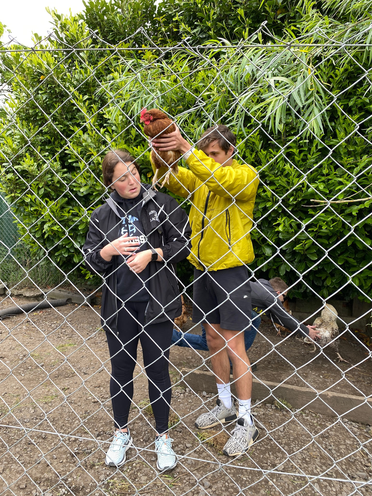
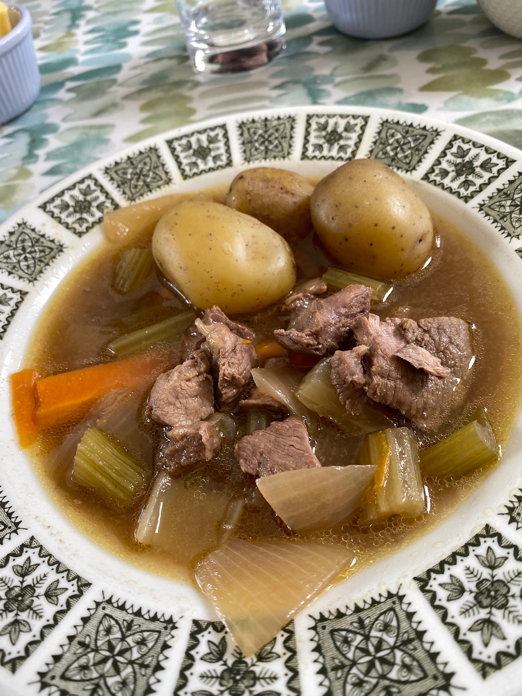
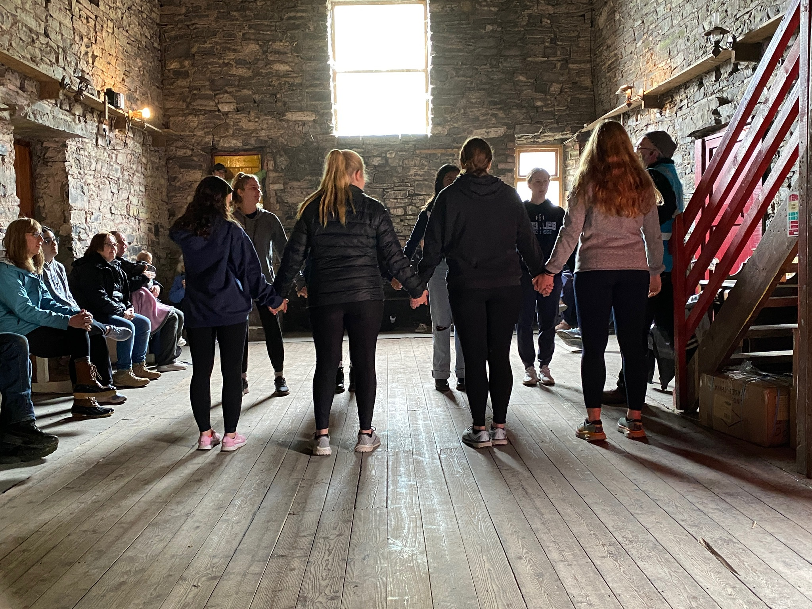
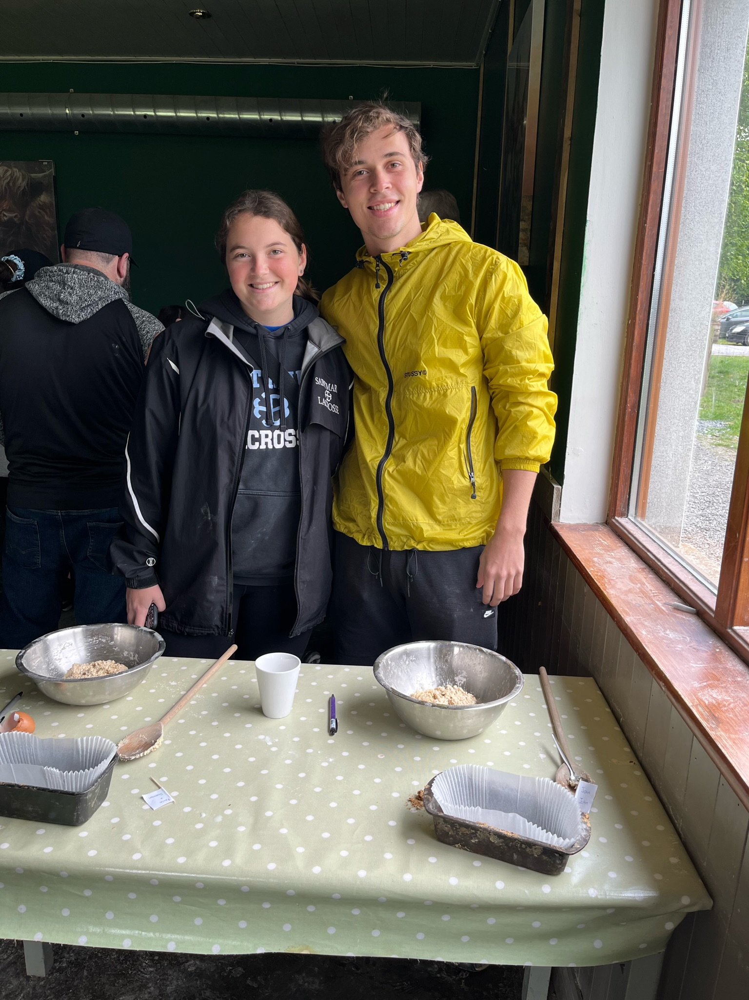
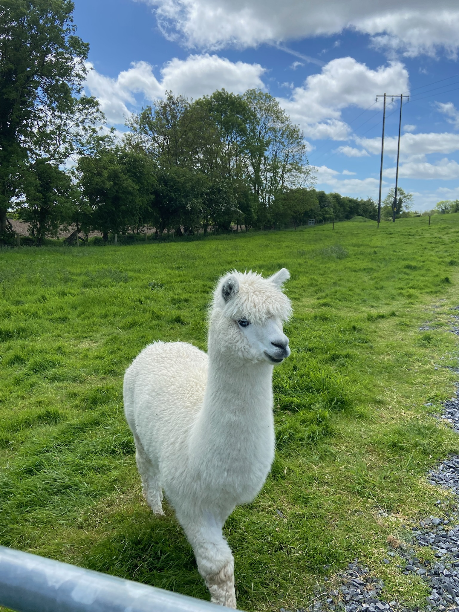
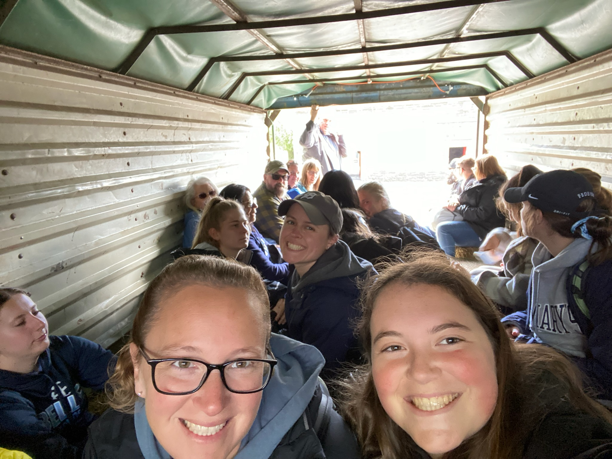
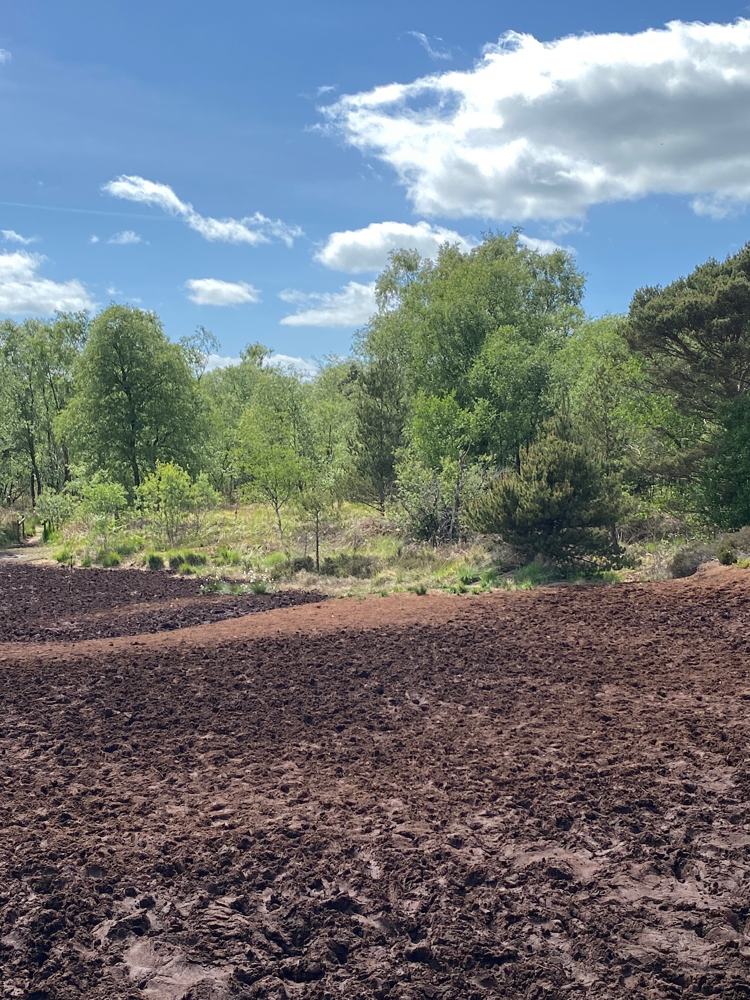

Day 4 was my favorite day by far. We visited Causey Farms and did an assortment of activities. When we first arrived, we went inside and participated in baking our own Irish soda bread. While that was in the oven, we headed outside to play camogie, which is an Irish stick and ball sport similar to lacrosse and field hockey. It was hard to get the hang of it, but was pretty fun after getting the hang of it. After finishing that, we headed into a barn to do some sort of Irish party tradition. We all had hand drums and sticks, and half of the group got into the middle to learn a dance. After tiring ourselves out doing that, we headed inside to have lunch. We had our soda bread and lamb stew. This was my first time having farm butter, and that Irish farm butter is the best butter I have EVER had. I still think about it..
Following lunch we headed outside to see all the farm animals. Our first stop was the chickens, and they let us pick them up and play with them. After the chickens we headed inside where there were lambs and goats. Next, we headed down to the fields to see the larger animals, like horses and alpacas. At the end of the fields we hopped into a trailer on the back of a tractor and headed to a bog! They gave us some fun facts about bogs and how they work, and the we got to go into the bog ourselves!
      